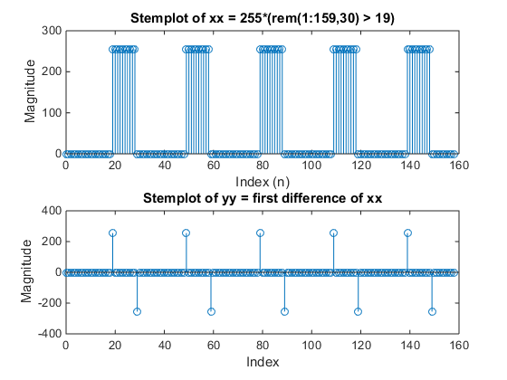
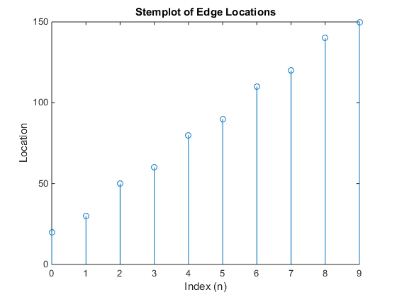
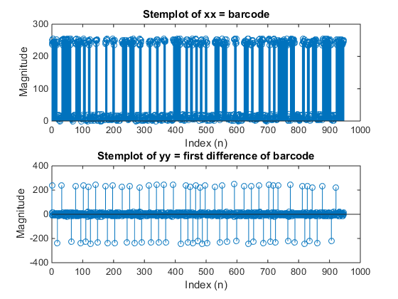
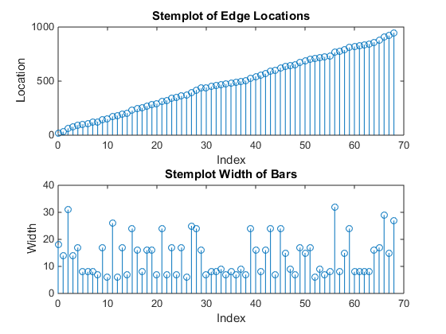
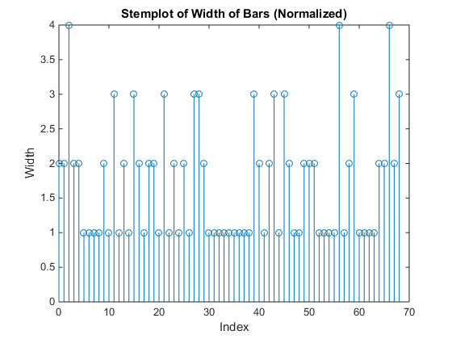
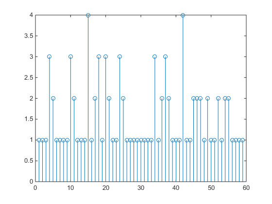

Lab_07_HW
Contents
4.1.1
xx = 255*(rem(1:159,30) > 19);
bk = [1 -1];
yy = firfilt(bk, xx);
nn = 1:length(xx);
subplot(2,1,1)
stem(nn-1, xx(nn));
title('Stemplot of xx = 255*(rem(1:159,30) > 19)');
xlabel('Index (n)');
ylabel('Magnitude');
subplot(2,1,2)
stem(nn-1, yy(nn));
title('Stemplot of yy = first difference of xx');
xlabel('Index');
ylabel('Magnitude');
yylen = length(xx) + length(bk) - 1;
fprintf('\nLength of yy is %d\n', yylen);
edges = abs(yy)> 0;
edgeloc = find(edges ~= false);
figure
stem((1:length(edgeloc))-1, edgeloc);
title('Stemplot of Edge Locations');
xlabel('Index (n)');
ylabel('Location');
Length of yy is 160
 
4.2.1a
bar = imread('HP110v3.png');
[row, col] = size(bar);
mid = floor(row/2);
xbar = double(bar(mid,:));
bk = [1 -1];
ybar = firfilt(bk, xbar);
4.2.1b
nn = 1:length(xbar);
subplot(2,1,1)
stem(nn-1, xbar(nn));
title('Stemplot of xx = barcode');
xlabel('Index (n)');
ylabel('Magnitude');
subplot(2,1,2)
stem(nn-1, ybar(nn));
title('Stemplot of yy = first difference of barcode');
xlabel('Index (n)');
ylabel('Magnitude');

4.2.1c & d
det = abs(ybar) > 150;
loc = find(det(2:end) ~= false);
figure
subplot(2,1,1);
stem((1:length(loc))-1, loc);
title('Stemplot of Edge Locations');
xlabel('Index');
ylabel('Location');
subplot(2,1,2);
locdelt = firfilt(bk, loc);
stem((1:length(loc))-1, locdelt(1:length(loc)));
title('Stemplot Width of Bars');
xlabel('Index');
ylabel('Width');

4.2.1e
barwidth = 12*7 + 3*2 + 5*1;
fprintf('Barcode width of 12 digit code is %d\n', barwidth);
Barcode width of 12 digit code is 95
4.2.1f
theta = zeros(1,length(locdelt) - 59);
for i = 1:length(theta)
theta(i) = sum(locdelt(i:58 + i))/95;
end
theta1 = sum(theta)/length(theta);
4.2.1g
locdeltrel = round(locdelt(1:end-1)/theta1);
figure
stem((1:length(locdeltrel))-1, locdeltrel);
title('Stemplot of Width of Bars (Normalized)');
xlabel('Index');
ylabel('Width');

4.2.1h
[ss, sloc] = ismember([1,1,1], locdeltrel);
barfilt = locdeltrel(sloc(1):sloc(1) + 58);
barnum = decodeUPC(barfilt);
barnumfin = sum(10.^(length(barnum)-1:-1:0) .* barnum);
ssbeg =
1 1 1
4.2.1i
fprintf('\nBarcode is: %d\n', barnumfin);
Barcode is: 882780450165
4.2.1j
bar2num('OFFv3.png');
ssbeg =
1 1 1
Barcode is: 46500703089
